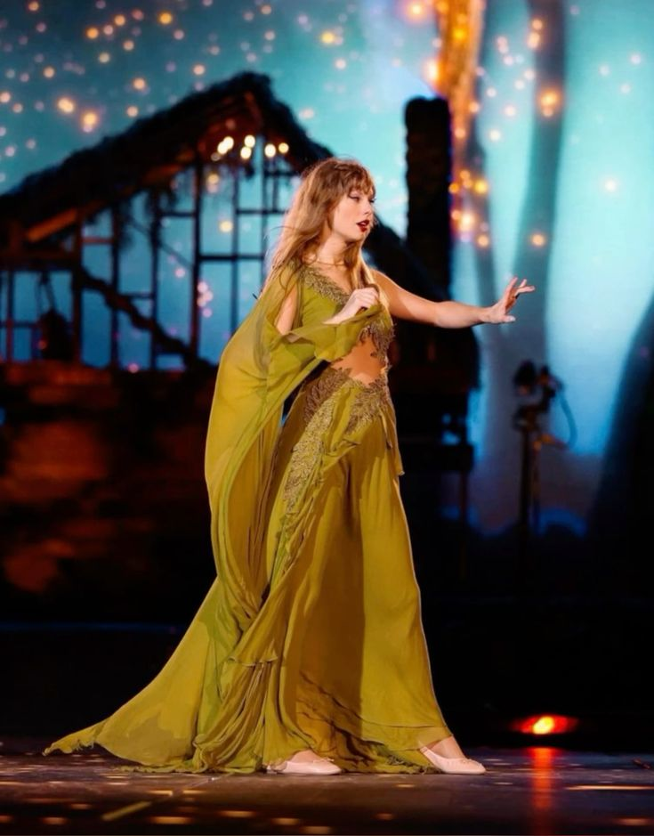
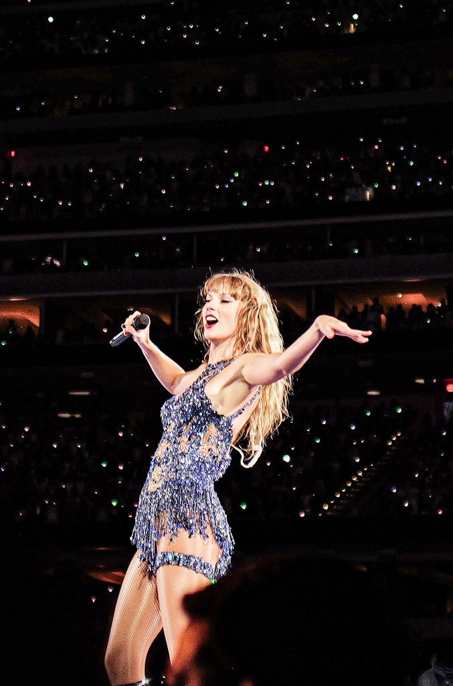
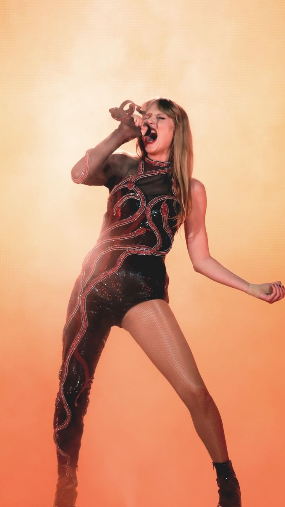

Setlist du Eras Tour
| Acte 1 (Lover) |
Acte 2 (Fearless) |
Acte 3 (Evermore) |
Acte 4 (Reputation) |
Acte 5 (Speak Now) |
Acte 6 (Red) |
Acte 7 (Folklore) |
Acte 8 (1989) |
Acte 9 | Acte 10 (Midnights) |
|---|---|---|---|---|---|---|---|---|---|
| Miss Americana | Fearless | Willow | ...Ready For It? | Enchanted | 22 | Invisible String | Style | Chanson surprise à la guitare | Lavender Haze |
| Cruel Summer | You Belong With Me | Majorie | Delicate | Long Live | We Are Never Getting Back Together | Betty | Blank Space | Chanson surprise au piano | Anti-Hero |
| The Man | Love Story | Champagne Problems | Don't Blame Me | I Knew You Were Trouble | The Last Great American Dynasty | Shake It Off | Midnight Rain | ||
| You Need To Calm Down | Tolerate It | Look What You Made Me Do | All Too Well (10 Minutes Version) | August | Wildest Dreams | Vigilante Shit | |||
| Lover | Illicit Affairs | Bad Blood | Bejeweled | ||||||
| The archer | My Tears Ricochet | Mastermind | |||||||
| Cardigan | Karma |
Nouvelle Setlist du Eras Tour (avec TTPD)
| Acte 1 (Lover) |
Acte 2 (Fearless) |
Acte 3 (Red) |
Acte 4 (Speak Now) |
Acte 5 (Reputation) |
Acte 6 (Folklore + Evermore) |
Acte 7 (1989) |
Acte 8 (The Tortured Poets Department) |
Acte 9 | Acte 10 (Midnights) |
|---|---|---|---|---|---|---|---|---|---|
| Miss Americana | Fearless | 22 | Enchanted | ...Ready For It? | Cardigan | Style | But Daddy I Love Him | Chanson surprise à la guitare | Lavender Haze |
| Cruel Summer | You Belong With Me | We Are Never Getting Back Together | Delicate | Betty | Blank Space | So High School | Chanson surprise au piano | Anti-Hero | |
| The Man | Love Story | I Knew You Were Trouble | Don't Blame Me | Champagne Problems | Shake It Off | Who's Afraid Of A Little Me ? | Midnight Rain | ||
| You Need To Calm Down | All Too Well (10 Minutes Version) | Look What You Made Me Do | August | Wildest Dreams | Down Bad | Vigilante Shit | |||
| Lover | Illicit Affairs | Bad Blood | Fortnight | Bejeweled | |||||
| My Tears Ricochet | The Smallest Man Who Ever Lived | Mastermind | |||||||
| Marjorie | I Can Do It With A Broken Heart | Karma | |||||||
| Willow |


